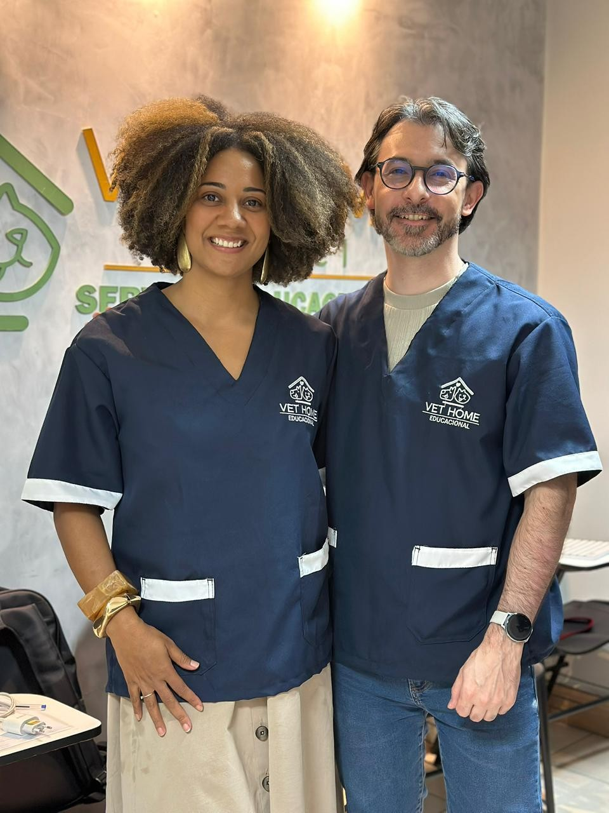
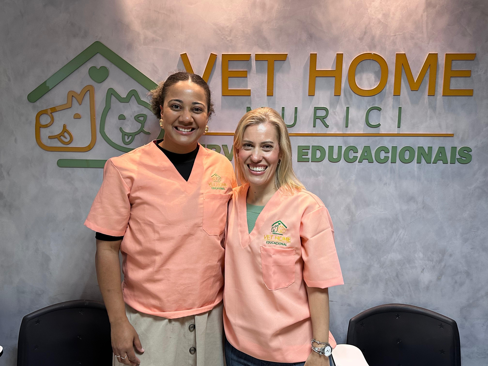
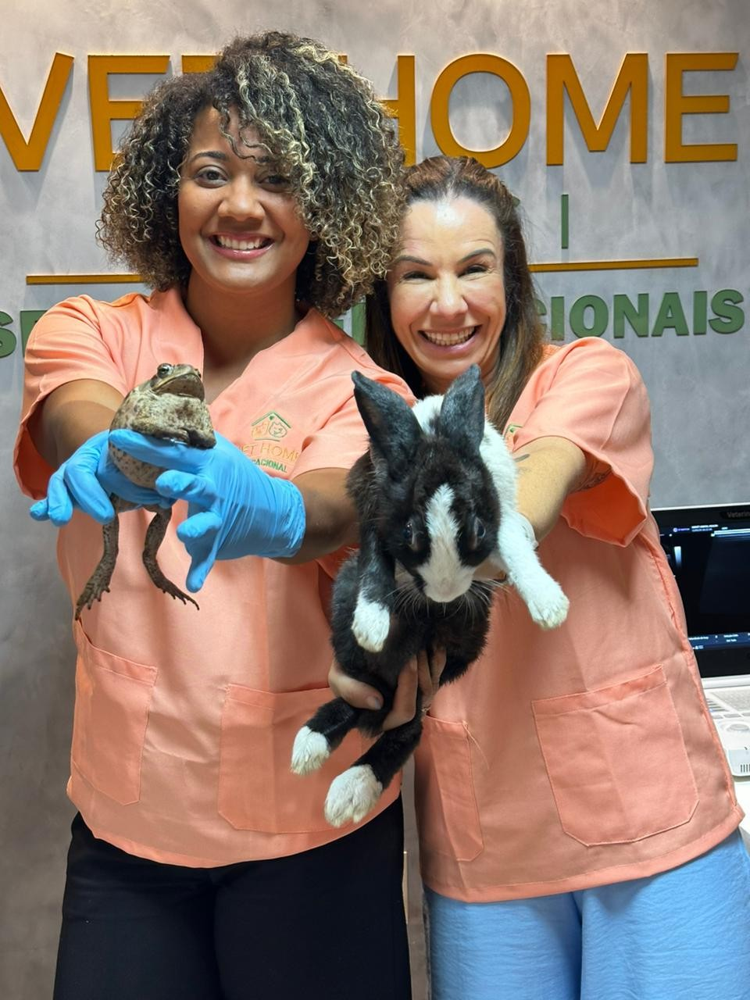
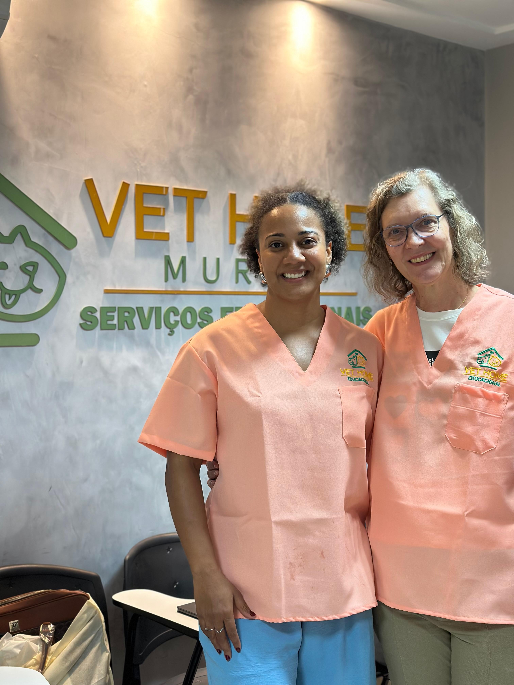
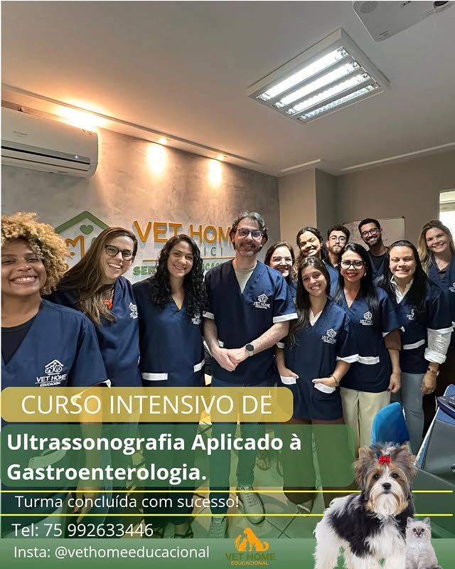

Galeria




Formação Veterinária na Prática
Aulas teóricas + prática real
Quero me inscrever
Ana López é médica veterinária formada pela Universidade Federal da Bahia (UFBA) em 2013, com sólida trajetória de mais de 11 anos dedicada à ultrassonografia veterinária. Desde o início de sua carreira, construiu sua atuação com perfil empreendedor, desenvolvendo expertise prática e consolidando seu nome na área.
Em 2021, fundou a Vet Home Educacional, uma marca voltada à formação e aperfeiçoamento de médicos veterinários, com foco em ensino aplicado, excelência técnica e desenvolvimento de profissionais mais seguros e preparados para a prática clínica.
Sua entrada definitiva no ensino foi impulsionada por um momento desafiador na carreira pública, quando, ao assumir o cargo de chefe de inspeção municipal, foi exonerada de forma injusta poucos meses depois. A partir dessa experiência, reposicionou sua trajetória com ainda mais clareza de propósito, direcionando seu conhecimento para a educação e se destacando na formação de profissionais na ultrassonografia veterinária.
Desde a primeira turma, realizada em janeiro de 2022, vem construindo uma jornada consistente na capacitação de médicos veterinários em todo o Brasil. Atualmente, está à frente da Vet Home Educacional, reunindo especialistas reconhecidos e elevando continuamente o padrão técnico dos cursos oferecidos.
Com uma abordagem que alia prática, didática e visão de mercado, Ana López se posiciona como referência na formação em ultrassonografia veterinária, contribuindo diretamente para a evolução e valorização da medicina veterinária.
Domine a prática de exames em cães e gatos com acompanhamento especializado.
Vivência real com pacientes, indo além da teoria.
Receba certificado e aumente suas oportunidades no mercado veterinário.
"colocar depoimento."
"Colocar depoimento."
"Colocar Depoimento"




📱 WhatsApp: (75) 99263-3446
📸 Instagram: @vethomeeducacional
Falar no WhatsApp